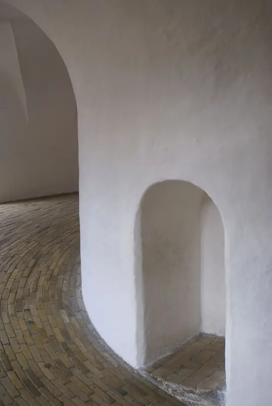
Twelve rooms where shadow does the structural work.
Open the issueContents
- 01Essay · p. 014Shadow is a material
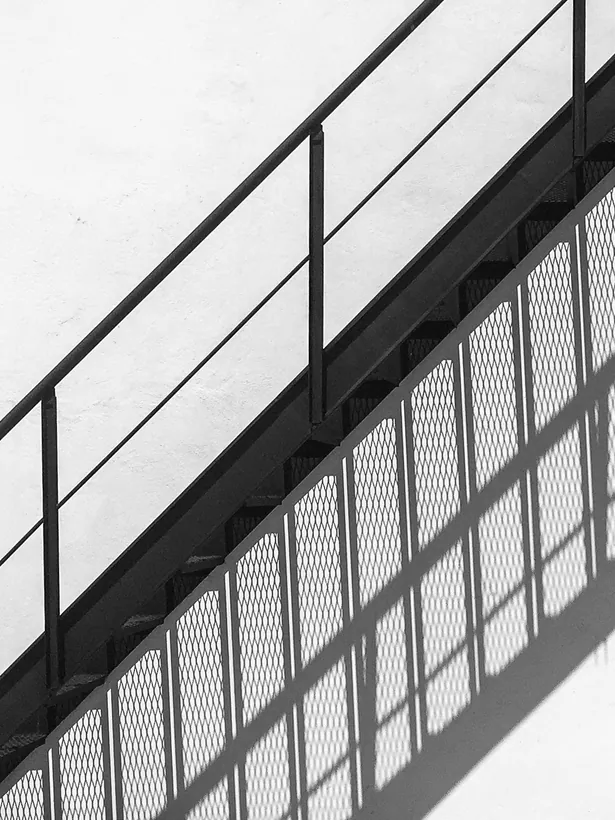
- 02Portfolio · p. 038Twelve thresholds
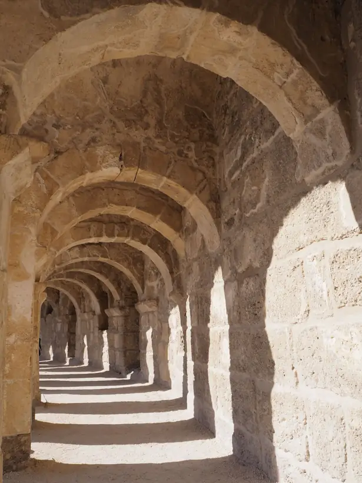
- 03Field notes · p. 066The stair that burns at noon
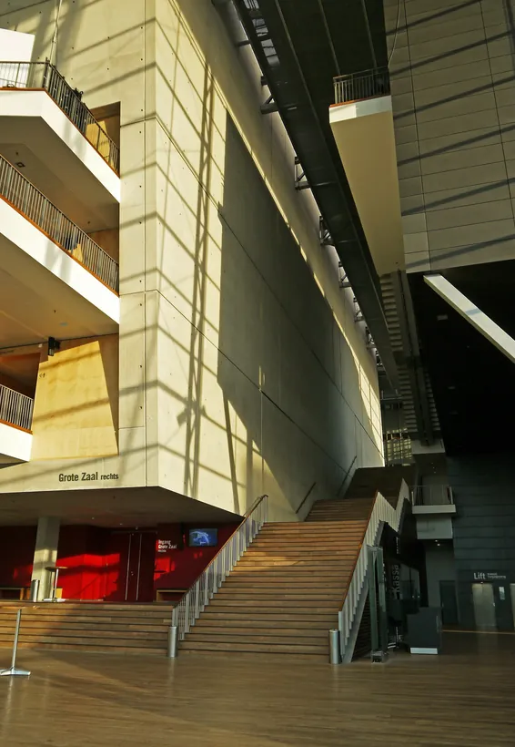
- 04Room · p. 082The curve and the corner
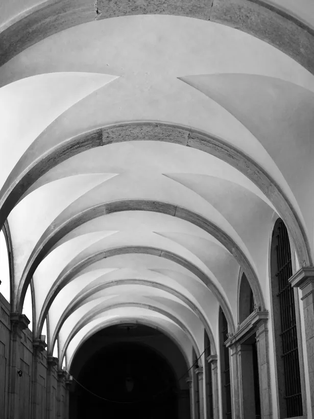
- 05Court · p. 104A stair with a garden in it
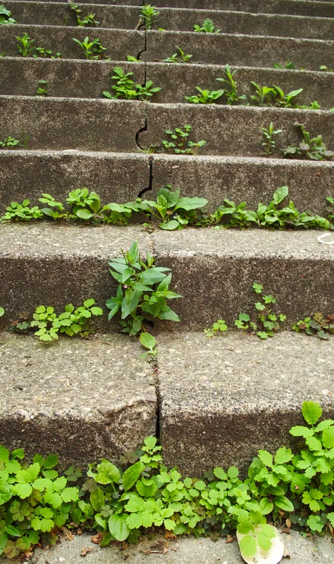
- 06Sequence · p. 128Looking up, in six frames
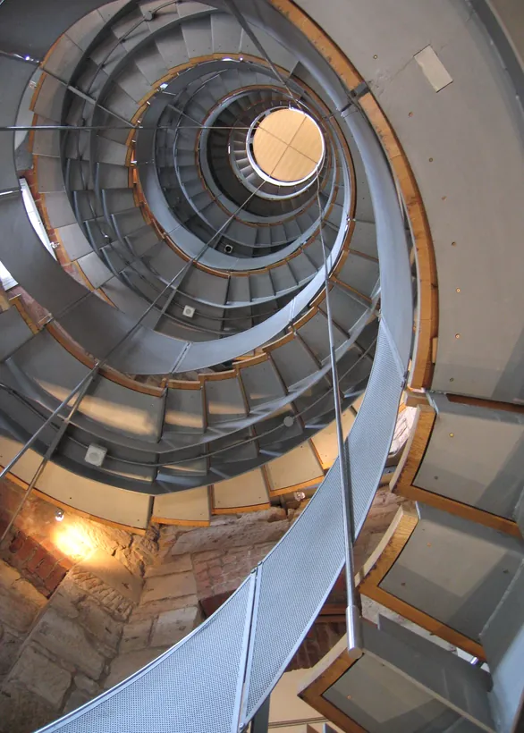
Essay · p. 014
Shadow is a material.
Architects talk about concrete, oak and steel as if those were the things we pay for. Walk any good room at four in the afternoon and you learn the truth: the budget went on a slot of sky, a deep reveal, a wall placed just so that the sun has something to fall against.
“A wall is only finished when the sun has crossed it.From the essay
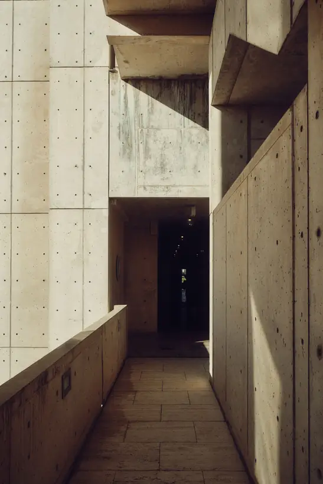
Shadow costs nothing to pour and everything to design. It needs mass to land on and an edge to start from. It moves, so the room is never the same room twice.

Plate · p. 030 · Real time
The sun crosses.
One plaster arcade, one sun. Scroll from morning to dusk and let the shadow do the drawing.
07:40
Twelve thresholds
01 / 08
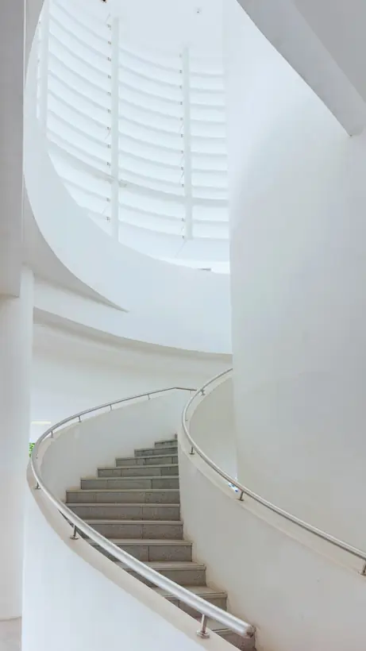
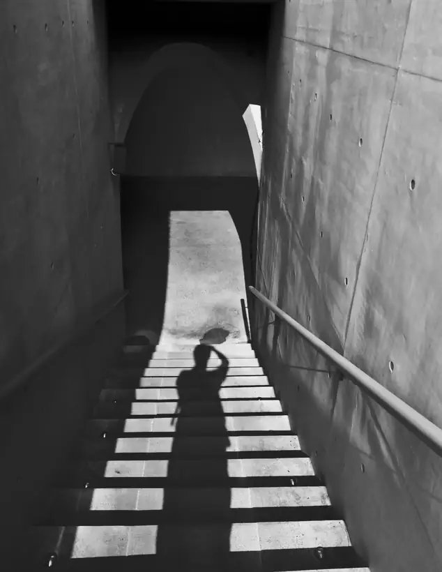
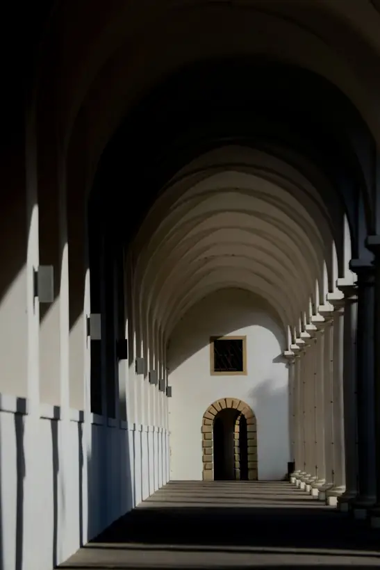
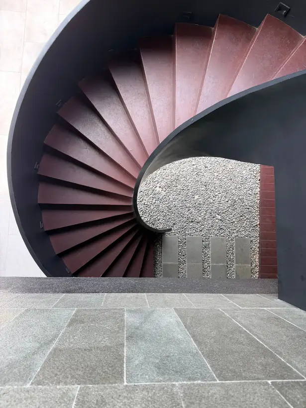
Swipe the plates
Light
Mass
Silence
Threshold
Printed to be kept.
- Pages
- 212
- Paper
- Uncoated, 240 gsm
- Binding
- Swiss, open spine
- Next issue
- 08 — Concrete Gardens
Concept only. Plinth is not a real magazine and nothing is sold or sent.